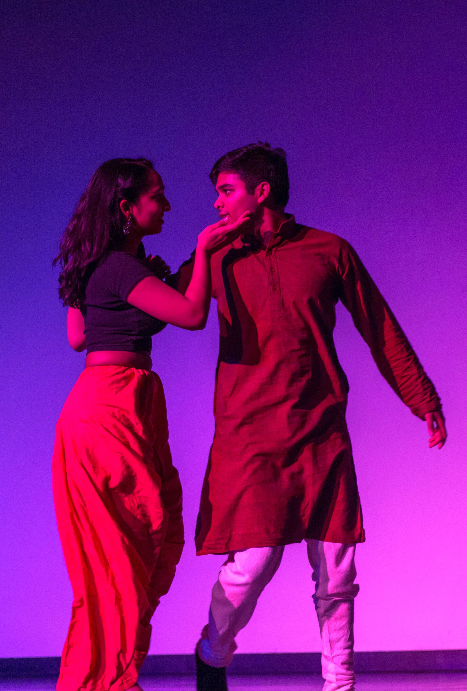
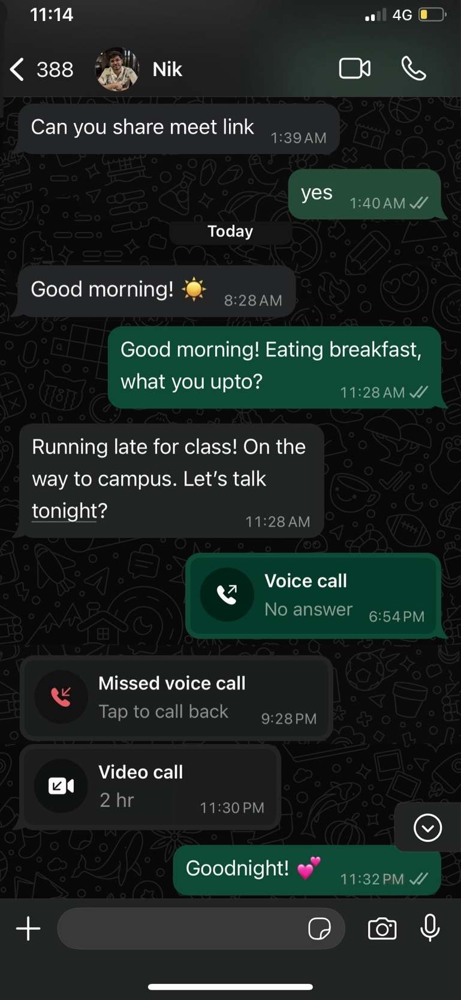

Highlights of our journey through the years.
9th November, 2017
We met for the first time during our undergrad. We started off as friends and as we got to know each other a little better, we shyly began to realize that what we felt was more than just friendship.
“Why was the fraction so nervous about marrying the decimal? It didn’t want to convert.”
College life was a whirlwind of equations, coffee, and late-night study sessions. During our time there we both were studying math which often (read: always) made us question our life choices. Luckily, we tackled it together.
Sometimes, one of us would struggle, and the other would step in with a patient explanation (or at least a bad joke to lighten the mood). Through all the learning, we grew closer. We laughed at silly mistakes (like the time one of us goofed up a simple addition during an exam - no names will be mentioned!), shared tears over the occasional tough result but celebrated each other's victories the most. Whether it was acing a test or finally understanding that one impossible theorem, we always cheered each other on.
Math brought us plenty of challenges, but it also gave us something better: the power of solving for 'us'.
During covid, when we were shut off from the rest of the world, we really found companionship with each other. This was the turning point of our relationship — it grew from a sweet college romance into something deeper, more mature, and steadfast.
For the right brain:
Love comes quietly
Love comes quietly,
finally, drops
about me, on me,
in the old ways.
What did I know
thinking myself
able to go
alone all the way.
For the left brain:
The speaker's love is all-encompassing, as their beloved's presence is carried within them. The beloved's influence extends to all aspects of the speaker's life, offering solace and purpose. The poem expresses a deep connection and reliance on the beloved, surpassing any fear or desire for an external world. This intense and intimate love is the ultimate mystery, transcending understanding and elevating the speaker's existence. The poem captures the essence of romantic love in the early 20th century, a time of societal and cultural change, reflecting the search for authenticity and intimacy in the face of uncertainty.
With Ridhika in New York City and Nikunj splitting his time between California and India, we found a rhythm across time zones.
She was counting down the moments till he was to arrive. She wolfed down her breakfast as if doing so would make the time go faster.
The moment she saw him at the airport, her excitement bubbled over. She was eager to share her world with him. She led him through her neighborhood, pointing out old haunts and childhood memories, his wide eyes trying to memorize every detail. They stopped at a tiny stall for vada pav—“the best on the planet,” she claimed. He raised an eyebrow, but one bite was all it took for him to agree.
By evening, they found themselves at Juhu Beach. The air was thick with noise: vendors shouting, children laughing, waves crashing. As they stood at the shore, staring out at the endless horizon, the chaos seemed to fade.
In that quiet moment, they didn't need words. It had been a hard year, but here, side by side, they found what they always did in each other—a steady calm amidst the noise.
A haiku
Awkward at first glance,
But kindness grows with each word,
A family forms.
Ridhika met Nikunj's parents and sister for the first time during this summer. We got to know each other over picnics, home-cooked food and laughs. The warmth and kindness they showed made Ridhika feel welcome.
This past year has been one full of reflection. Amidst the wedding preparations we discovered several values that have been the pillars of our relationship. We hope to continue to build on this foundation in our married life.
कराविव शरीरस्य नेत्रयोरिव पक्ष्मणी।
अविचार्य प्रियं कुर्यात् तन् मित्रं मित्रमुच्यते॥
Meaning: That friend is your true friend who serves you spontaneously (without being prompted by a motive), like the hands serving the body and eyelashes serving the eyes.
कर्मण्येवाधिकारस्ते मा फलेषु कदाचन।
मा कर्मफलहेतुर्भूर्मा ते सङ्गोऽस्त्वकर्मणि॥
Meaning: This verse emphasizes the concept of performing one's duties without attachment to the outcomes. It encourages individuals to focus on their responsibilities and actions while letting go of the desire for specific results.
अहं त्वयि स्निह्यामि
Meaning: This sentence translates to "I love you" and conveys the idea that love is an internal emotion.